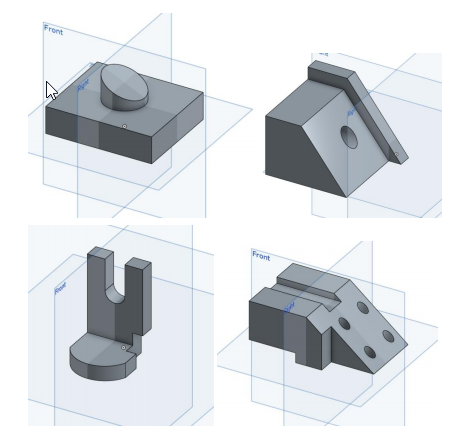

2018 Fall 分組網站
Home
Site Map
reveal
blog
簡介
Reveal投影片
Blog部落格
Onshape Lesson Plan
Lesson1-1課程內容
Lesson2-1課程內容
Lesson3-1課程內容
Lesson4-1課程內容
Lesson5-1課程內容
影片實作練習
Week1
Week2
Week3
Week4
Week5
Python 手冊
OnShape 手冊
Fusion 360
Onshape Lesson Plan <<
Previous
Next
>> Lesson2-1課程內容
Lesson1-1課程內容
創建一個Onshape帳戶
●導航3D環境
●解釋基於草圖的建模
介紹4個基本特徵（擠出，旋轉，掃描，和疊層）
●從2D轉變到3D
●介紹基本草圖
練習Exercise #2的四張圖來熟悉以上介紹的功能指令

Onshape Lesson Plan <<
Previous
Next
>> Lesson2-1課程內容
![]()